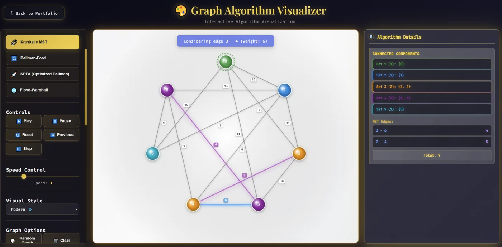

Graph algorithms
Inspect the queue, update and assumption behind a graph algorithm: compare lazy and eager Prim, follow SPFA’s frontier, and read Floyd–Warshall’s path witnesses. The result is only the beginning; the working state explains why it is valid—or where an assumption fails.
Explore connections
Open the application, then follow what changes
Inspect the working state behind a graph result. Lazy and eager Prim expose different queue bookkeeping, SPFA reveals its changing frontier, and Floyd–Warshall retains path witnesses. Assumptions, updates and counterexamples explain subtleties that a final highlighted graph would hide.
-
01
Set the graph
Choose topology and weights that make the algorithm's assumptions concrete.
-
02
Follow the frontier
Inspect queues, candidate edges and intermediate distance updates.
-
03
Compare implementations
See how different bookkeeping changes the work on the same problem.
-
04
Connect to the proof
Use witnesses and invariants to explain why the result is valid.
See the state behind the result
A highlighted shortest path hides most of the algorithm that produced it. This visualizer exposes the intermediate work: the current vertex, candidate edges, distance updates and contents of the queue. Playback can pause, advance one event or return to earlier states, making it possible to inspect why a particular edge was accepted, rejected or revisited.
The same graph supports Dijkstra, two Prim variants, Kruskal, Bellman–Ford, SPFA and Floyd–Warshall. Moving between them makes the differences in their working state visible without requiring a new diagram for each algorithm.
Turn data structures into explanations
The algorithms are JavaScript generators that yield named events and state snapshots. The visualizer consumes those events and retains a history for backward navigation. This keeps the computational steps separate from the animation that explains them.
The implementation includes a binary min-heap and a disjoint-set structure with path compression and merging by component size. Dijkstra exposes stale priority-queue entries; Prim exposes changing candidate costs; Kruskal exposes component merging. Floyd–Warshall maintains both a distance matrix and next-hop information, supporting inspection of the actual paths behind a matrix update.
The optimized Prim variant keeps one current key per candidate vertex instead of accumulating stale entries. In this teaching implementation, decrease-key still searches the heap linearly; the label describes the update strategy, not the asymptotic bound of an indexed production heap. SPFA similarly changes the relaxation schedule of Bellman–Ford: queue membership and repeated improvements matter, and favorable examples do not remove its difficult worst cases.
Make assumptions inspectable
Directedness and edge-weight controls provide a route into failure cases. The application checks for negative cycles and compares Dijkstra with Bellman–Ford when looking for a concrete disagreement on a graph with negative edges. The useful question becomes specific: which assumption changed, which update became invalid, and where do the resulting distances diverge? Together with explicit queue and relaxation events, that makes this a study of algorithm behavior rather than only a collection of animated answers.
Why do Prim and Kruskal both work?
Prim grows a tree through a cheapest crossing edge; Kruskal joins components through the next admissible edge. The cut property and an exchange argument explain why these different local choices can be safe. With tied weights, the resulting minimum spanning tree need not be unique.
That question motivates Clique Proofs: compare the direct arguments connecting greedy choices, cuts, cycles and certificates. The same habit extends beyond graphs. In metric spaces, compactness can be described through finite subcovers, convergent subsequences, or completeness plus total boundedness; finding a direct bridge between two formulations can reveal what a short equivalence chain conceals. The analogy is a way of investigating proofs, not a claim that MST and compactness are the same theorem.
More recorded views · 2
Current scope
- The implementation favors inspectable graphs: neighbor lookup scans the edge list, and replay retains copied state. Playback speed is not a production-performance benchmark.